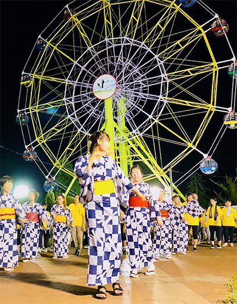

め ： 目にうつる 大輪の花火 サマーフェスティバル
一言でいうと？
越前市の夏のお祭りの代表！

8月中旬に行われる夏祭りです。
「日野川の花火大会」といえば馴染み深いでしょうか？
三夜にわたって開催され、祭り中は屋台も並びます。
お祭りの内容は？
ふるさと踊りや花火大会

★第一夜 オープニング
武生中央公園をねり歩くふるさと踊りや迫力あるヨサコイが披露(ひろう)されます！
(2019年は丹南ケーブルテレビ制作の新曲「越前武生の夕暮れは」が披露されました／歌・野路由紀子)
★第二夜
遊具運行、屋台がでます。
★第三夜 メイン
いよいよ花火大会！
約1万５千発の花火が村国山を背景に、日野川を舞台にして打ちあがります。毎年10万人が訪れる人気花火大会です！
見どころは？
間近でみる大迫力花火！
サマーフェスティバルの特徴は、なんといっても花火との近さ！
日野川の万代橋(ばんだいばし)から見る花火は本当に距離が近くて、「間近で見ることができる花火」として県外から見に来るお客さんもいるんだとか。
最近では音楽に合わせて花火を打ち上げる企画をしており、こちらも大人気です！
▼サマーフェスティバル花火大会の様子(2018)
「日野川の花火大会」越前市民であれば誰もが行ったことがあるのではないでしょうか？私も毎年見に行っていますが、河川敷で見るとほぼ真上で花火が上がっているので燃えカスがパラパラと…(笑)でもそれだけ距離が近いということです！